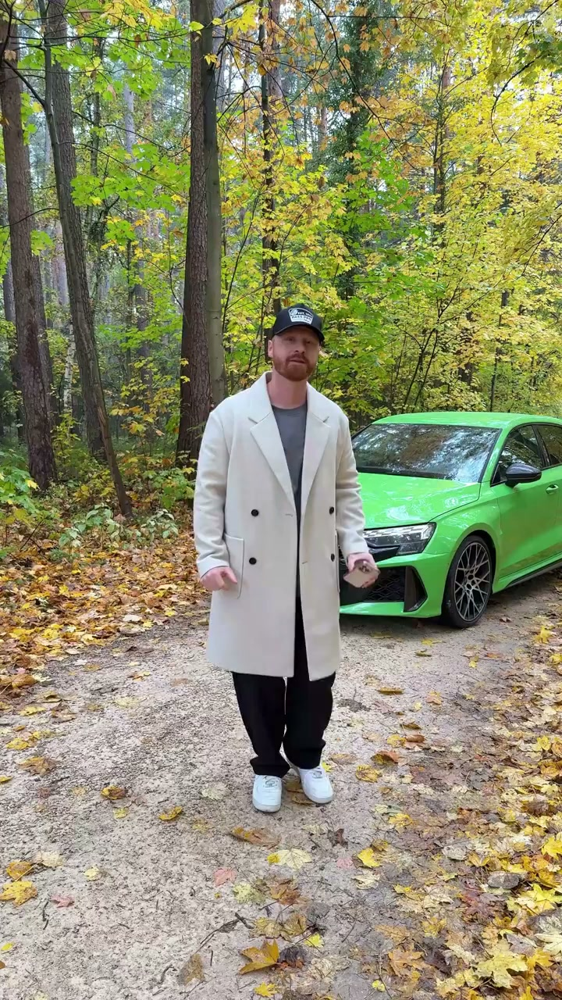
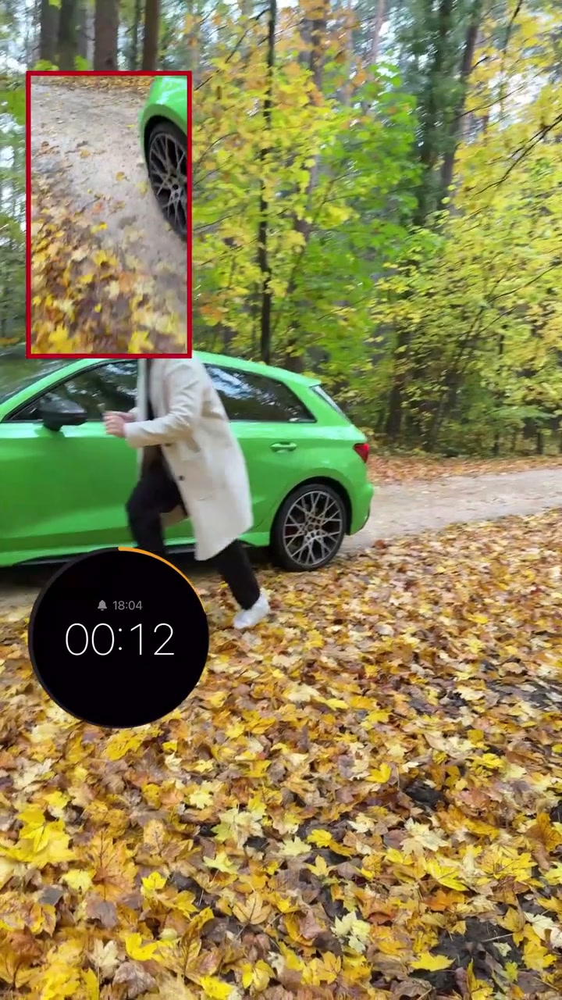

01
中文
静态的车照看起来没有动感。
EN
A static photo of a parked car lacks dynamism.
表达提示lack dynamism（缺乏动感）

Scene English · 拍摄 · 慢门追随
How to Make Your Car Look Dynamic in 37 Seconds
🎧 语音讲解
The Problem: Stillness
情境静态的车照看起来毫无动感，核心解法是用慢门追随拍摄法。
静态的车照看起来没有动感。
A static photo of a parked car lacks dynamism.
表达提示lack dynamism（缺乏动感）
用慢门追随拍摄法，把静态的车拍出动感。
Use slow-shutter panning to make a parked car look dynamic.
表达提示slow-shutter panning（慢门追随）
核心是把快门速度放慢，跟随车辆移动拍摄。
The key is a slow shutter while tracking the moving car.
表达提示slow the shutter（放慢快门）
lack dynamism（缺乏动感
slow the shutter（放慢快门

How Panning Works
情境降低快门速度（如1/30s或更慢），在车辆移动时跟随平移相机：车身因相对静止保持清晰，背景因相机移动产生动态模糊。
降低快门速度，在车辆移动的同时跟随平移相机。
Lower the shutter speed and pan along with the moving car.
表达提示pan along（跟随平移）
车身因相对静止而保持清晰。
The car body stays sharp because it's relatively still in the frame.
表达提示stay sharp（保持清晰）
背景因相机移动而产生动态模糊，形成速度线效果。
The background blurs from the camera motion, creating speed lines.
表达提示motion blur（动态模糊）
pan along（跟随平移
stay sharp（保持清晰

The Three Essentials
情境慢门追随的三要素：低快门速度、平滑跟焦、与被摄体同速移动。
三要素：低快门速度加平滑跟焦，再加与被摄体同速移动。
Three essentials: low shutter speed, smooth focus tracking, and moving at the same speed as the subject.
表达提示focus tracking（跟焦）
快门太慢会导致车身也模糊。
A shutter that's too slow blurs the car body too.
表达提示too slow a shutter（快门过慢）
跟焦不匀速会导致画面抖动。
Uneven focus tracking causes shaky footage.
表达提示uneven tracking（跟焦不匀速）
focus tracking（跟焦
too slow a shutter（快门过慢

Tools and Light
情境手持容易抖动，建议用三脚架或稳定器；白天光线强时快门降不下来，需要ND滤镜。
手持容易抖动，建议使用三脚架或稳定器辅助。
Handheld shots shake easily; use a tripod or gimbal.
表达提示tripod（三脚架）
光线太强时快门降不下来，需要ND滤镜。
In bright light the shutter won't drop, so you need an ND filter.
表达提示ND filter（ND滤镜）
推荐快门 1/15秒 到 1/60秒，越慢越动感但越难稳。
Use 1/15s to 1/60s; slower is more dynamic but harder to hold steady.
表达提示slower is harder（越慢越难稳）
tripod（三脚架
ND filter（ND滤镜

Practice Path
情境从1/60s开始逐步降低快门，先用静止物体练跟焦，选有背景细节的场景，效果更明显。
练习从 1/60秒 开始，逐步降低快门速度。
Start at 1/60s and lower the shutter step by step.
表达提示step by step（逐步）
先用静止物体练习跟焦稳定性。
First practice focus tracking on a static object.
表达提示static object（静止物体）
选择有背景细节的场景，模糊效果更明显。
Pick scenes with background details for a stronger blur.
表达提示background details（背景细节）
step by step（逐步
static object（静止物体
说慢门追随
说三大要素
说推荐参数
说白天拍摄
说练习路径
快门要逐步降。
与被摄体同速。
用三脚架或稳定器。
白天要ND滤镜。
动感靠拍不靠后期。